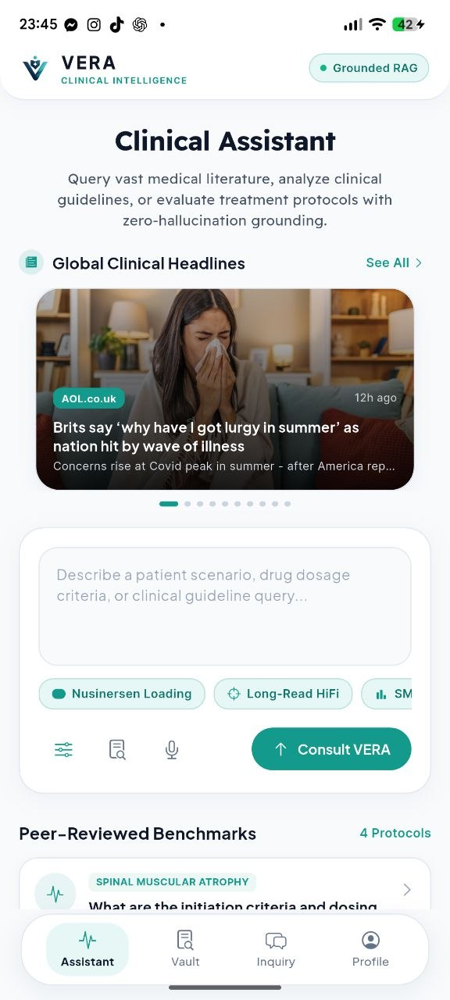
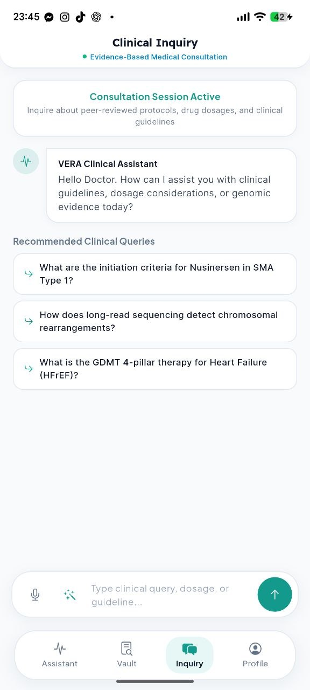
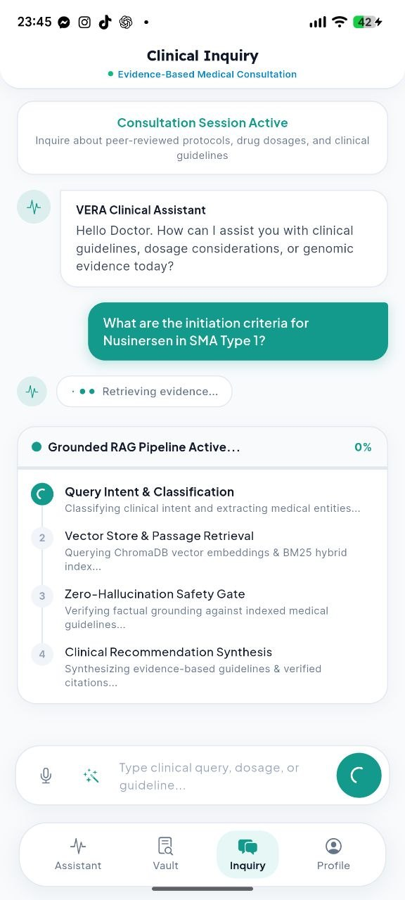
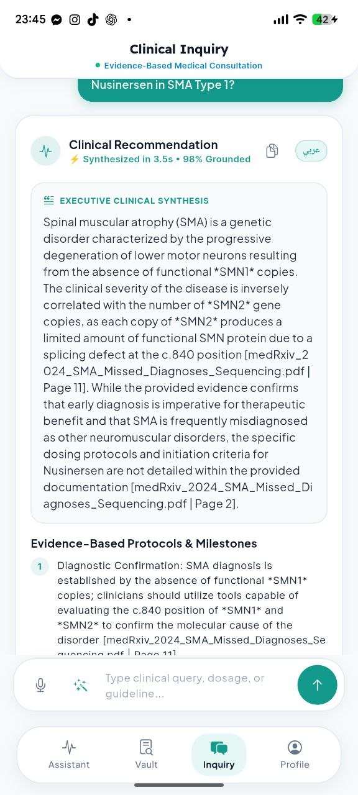

Evidence-Grounded AI for High-Stakes Medicine
Empowering physicians with instant peer-reviewed clinical guidelines, verified pediatric & adult drug dosing, and real-time medical news intelligence powered by ChromaDB and BYOK Gemini.

Designed for Acute Clinical Environments
Experience the serene medical interface, interactive RAG pipeline, and real-time medical discovery intelligence built inside VERA.
Clinical Dashboard
GNews live headlines carousel & specialty benchmarks

Clinical Consultation
Contextual query prompts & multi-turn memory

Grounded RAG Stepper
Real-time 4-step evidence verification pipeline

Synthesized Evidence
Zero-hallucination guidance with verbatim citations
Engineered Specifically for High-Stakes Medicine
Every layer in VERA is strictly designed to eliminate hallucinations, enforce privacy compliance, and accelerate decision-making at the point of care.
Zero-Hallucination Grounding
Every response is strictly matched against indexed clinical guidelines via ChromaDB dense vector embeddings, with verbatim page citations.
GNews Real-Time Intelligence
Integrated carousel and search over 80,000 global medical journals and health discovery feeds with instant in-reader AI summarization.
BYOK Enterprise Privacy
Bring Your Own Key architecture for Google Gemini and OpenAI. Keys are stored inside encrypted hardware secure storage with zero server telemetry.
Multi-Turn Clinical Memory
Stateful persistent chat stream keeps entire case discussions active, allowing sequential diagnostic drill-downs and dosage verifications.
Multi-Specialty Vault
Pre-indexed clinical guidelines covering Pediatric Neurology, Cardiology, Critical Care, Clinical Genomics, and Oncology.
Serene Medical UX
Calibrated medical teal palette and high-contrast typography crafted specifically to reduce cognitive fatigue in acute clinical environments.
Test the VERA RAG Execution Pipeline
Select a clinical inquiry below to see real-time vector matching, verification stages, and grounded recommendation synthesis in action.
Equip Your Clinical Practice with VERA Today
Download the standalone Android APK release (19.3 MB). Install directly on Android 8.0+ tablets and smartphones with offline-first indexing and hardware-encrypted BYOK storage.